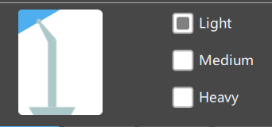

3D printing is the process of creating a physical object from a 3D model using an additive process. 3D printing has applications in rapid prototyping, the hobby space, and the production of final products. There are various materials and methods for 3D printing, each with its uses, advantages, and disadvantages. The two most common consumer 3D printing technologies are FDM 3D printing, LCD printing. Kyler uses both types of 3D printing for rapid prototyping for school projects and hobby use.
Fused Deposition Modeling (FDM) is a method of additive manufacturing where the material is extruded through a nozzle and
fused with previously placed material. In a 3D printer, a filament passes through a heated extruder that deposits the material
as the extruder moves.
Common FDM Extruder (Credits: Quickast Makers Space)
FDM 3D printers use materials ranging from plastics to metal and foods such as chocolate. The most common consumer materials are plastics.
3D printers come in all shapes and sizes and can have features designed to simplify the process of printing. Some higher-end printers use higher quality materials to reduce the odds of failure and the frequency of maintenance. Overall, printers with a lower cost may perform similarly to more expensive printers but may not be as beginner-friendly due to increased maintenance. Click on the printers to learn more.
|
|
|
FDM 3D printing is generally safe, but accidents can occur. One of the more common accidents is burns from the nozzle. The nozzle of the 3D printer will reach temperatures of at least 180-200 C (356 - 392F). In addition to burns, fires could occur if thermal regulation fails or the printer fails, but this is unlikely when taking proper care. Finally, certain materials can produce negative side effects, so it is best to research materials before printing.
Before you use the printer, you need to take a 3D model and convert it into path instructions the printer can read. The instructions are the GCODE, and the program that creates this file is called a slicer.
Slicers are programs that will take a 3D model and generate the paths necessary for the printer to travel to create the model. Some slicers are proprietary to the printer, and some support many printers. One popular slicer is Cura which supports many printers and is beginner-friendly with the ability to be fined tuned by experienced users.
When you import a model into Cura, it can be resized, rotated, and moved to accommodate multiple models. The model should be flat against the print bed, or a majority of it should.

Slicers come with settings that will determine the quality of the print, configure settings for the material used, and the support structure.
Rectangular vs Tree Support
 |
 |
Once the model is imported and the settings configured, the model is ready for slicing. Click on the slice button, and the slicer will analyze the model to generate the paths for the printer.
The steps to print the model varies from printer to printer, but in general, insert the storage medium into the printer, and pre-heat the printer. Once the printer is pre-heated, go to the menu to start the print and wait for your model.
 |
 |
Liquid Crystal Display (LCD) printing uses an LCD screen as a light source to cure the resin. The part is printed one layer at a time and an LCD screen will illuminate to cure the pixels for that layer.
The build plate allows the layers of the print to build on each other. The inverted build plate allows new material to be added onto the top and helps excess resin drip off.
The vat is a container that stores the resin.

Common LCD Printer Process (Credits: Phrozen 3D)
Resin printing performs the best with high-detail 3D prints, such as miniature figurines for board games such as Warhammer.
Resin printers are also used for prototyping collectible figurines before they are mass manufactured or sent as is.
There are other methods for 3D printing using resin, but LCD printing will be the primary focus of this webpage.
The primary material for LCD resin printers is photopolymer resin which will cure when exposed to ultraviolet light. Resin is the standard for printers, but they differ in color and the material required to clean them. Some resins can change their color in response to heat or are translucent. The resin can also differ in strength, some claim to be 'ABS-Like' in strength, and some require different methods for cleaning, more on that in the cleanup section.
When choosing a printer, the primary differences will be in the size of the printer and the screen. Some printers have a larger volume with a larger build area and height, contributing to a larger volume. The other difference is in the LCD screen, more expensive printers have high-resolution screens, which allow for higher detail prints, and some screens allow for faster printing. Depending on your budget and expected print size, some printers will be more appropriate for your project.
 |
3D printing with resin is far more dangerous than with PLA, and many more safety measures are necessary. Resin is an allergen, so prolonged exposure will result in irritation and allergic reactions when in contact with resin. Resin provides a foul odor but becomes undetectable after exposure. If you come into contact with resin, it will be through your hands or fumes from the resin.
To protect yourself against resin, wear PPE and employ safety measures. Common safety materials include Nitrile disposable gloves, safety glasses/goggles, and a respirator. If resin gets into contact with the skin, wash the affected area with soap and water, and it is best to print in a well-ventilated room to reduce exposure to resin fumes.
 |
The process for creating a resin 3D print is similar but requires more cleanup.
There are a few different slicer programs, but the one we will be looking at is Chitubox which supports many different LCD printers.
When you import a model into Chitubox, it can be resized, rotated, and moved to accommodate multiple models. The print should be oriented to reduce the number of supports on delicate or important features (more on this in the supports section). If possible, increase the area of the model in each layer which will help reduce print time since the print time is dependent on the layers of the final print. There are a few different slicer programs, but the one we will be looking at is Chitubox which supports many different LCD printers.
Here are the settings I use for my 3D printer.
Resin supports require more work than FDM printing because they often require the user to place. There is no all size fits all approach to adding supports because different-sized supports are necessary for the features of the print. The problem with auto-supports is that they are all the same size, and auto-supports can miss locations that require support, producing islands or weak areas that can break during printing.
When placing supports in Chitbux, the user has three types of supports to use in their print. Here is a general overview of them.
|  |
In practice, auto-supports can prepare the majority of the print, and then the user can add, edit, and remove any necessary supports. The support process can take some time, especially for beginners, as it is trial and error until users become comfortable adding supports and have enough experience to identify areas the print will likely fail. Once the model has the necessary support, it is time to print.
Once the supports have been created, the model is ready for slicing.
The steps to print the model begins with loading the sliced model on a USB drive and inserting it into the printer. Next, turn on the printer and fill the vat with resin. Always check to make sure the build plate is secured and then you can begin the print and wait. Don't forget your PPE.
When the print completes, there are a few steps to complete before the print is ready and you clean up the work station. The printed object must first be cleaned and cured before it is ready.
Before curing the print, you must remove the supports from the model. Some prefer to remove the supports after cleaning the print, and some prefer removing them before cleaning. Either is fine, but some claim that the supports are easier to remove after washing the print.
When you remove supports, the model can get damaged because the supports can break parts of the model or fuse into the model itself. Common defects include little divots (dimples) in the print where the support came into contact with the model. These defects can be correct, but the processes vary, see post-processing.
When the model finishes printing, you remove any left over resin. Depending on the resin type, you can wash the model using alcohol or water. It is important to clean the model well if you are not painting it because white specs may appear on the model. Wash stations can increase the efficiency of the cleaning process, but they can be expensive. Kyler uses an old pasta jar to clean small objects and a toothbrush to get into the nooks and crannies. Avoid cleaning the print in the sink because the resin can harm the environment and your plumbing. You can clean the model in a separate tub or bucket so the water can be filtered from the resin or taken to proper disposal sites.
After cleaning the model, it needs additional curing. While 3D printing, the LCD screen partially cures the model to the point where it can support its own weight but not fully; this extends the life of the LCD screen. The least expensive way to cure the print is to hardness the power of the sun, but the time to cure is long and may not cure it evenly. The most expensive method is to purchase a curing station which can reflect the light all along the model and spin it, these cure quickly but can be expensive. Kyler uses a UV lamp and a cardboard box with foil inside to cure his prints. It cures in a timely manner and is much cheaper than other curing stations.
After washing the print, we must clean the printer. You should replace the resin every 48 hours and whenever prints fail. We can reuse any leftover resin by pouring it back into the bottle. You should filter the resin before pouring it back into the bottle to remove any debris that may have gotten into the vat.
Wash the vat and the build plate with water or alchol; this varies between resins. Clean the vat with Microfiber clothes to avoid scratching the vat's FEP film. You can place the vat and build plate in the printer once they dry off. Avoid cleaning the parts in the sink because the resin can harm the environment and your plumbing. To avoid potential environmental hazards, clean the vat and the build plate in a separate tub or bucket so the water can be filtered from the resin or taken to proper disposal sites.
Now that you have your print, you likely have imperfections in the model you wish to remove or want to paint so it looks like the intended final product.
Sandpaper can remove uneven surfaces, blemishes, and dimples left from supports. Avoid low grit sandpaper when working with resin prints because it removes a large amount of resin and can ruin the print. Use higher grit sandpaper with resin which will produce a smooth finish.
Wood filler can repair blemishes and hide seams between connecting parts.
If you want to paint the print, the result is dependent on the quality of the paint you use and your skill. The first step is to use a spray paint primer to prepare the 3D print; some primers also act as fillers. It is best to use light colors when priming, such as grey. Kyler uses a cardboard box outside when he sprays his prints.
You can use acrylic paint and various brush sizes to paint the 3D print. If the model has small details, make sure to have an assortment of brush sizes. You can use an airbrush to paint the prints, but those cost more than acrylic paint.
Kyler still has a long way to go with his painting skills, especially a character's eyes, but he is still practicing. He is interested in purchasing an airbrush one day.
We will end our discussion of 3D printing for now, but this is only the tip of the iceberg. There is much more to learn about the topics brought up not just on this webpage but in 3D printing as a whole. I hope you enjoyed the read and learned more about Kyler's hobby of 3D printing. Please see the gallery at the end.
Below is an image of a 3D print Kyler has worked on. Click the buttons below to cycle through the images.